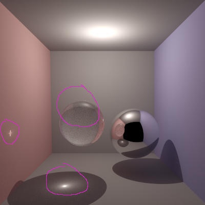
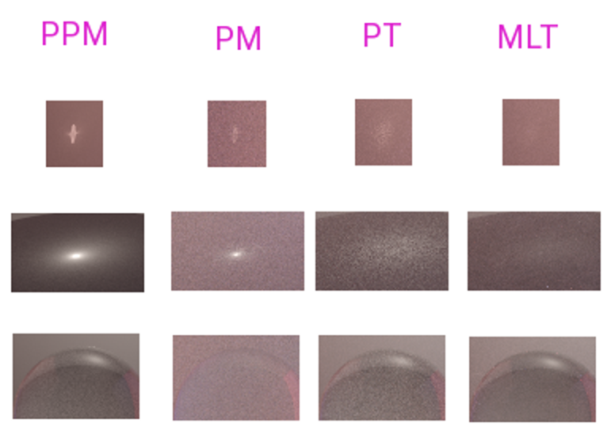

這四張圖片則是 PPM iteration 4 / 16 / 64 / 128 的比較圖， 可以看到影像逐漸收斂的過程。
B03902082 資工三 江懿友
我的 Final project 是實做 Progressive Photon Mapping 這篇論文描述的演算法。 Progressive Photon Mapping （以下簡稱 PPM），是一種改進版的 Photon mapping（以下簡稱 PM）。
PM 是一個兩階段的演算法，第一步是先從各個光源 sample 許多光線， 並且在光線的交點黏上光子，然後把所有光子建成一棵 KdTree 之類的加速結構。 第二步則是從 camera 射出光線做 ray tracing， 然後在光線的交點找出附近的光子用來估計能量。 PM 的好處是可以準確的模擬光線散射（例如透鏡聚焦），壞處則是為了提升準確度跟降低雜訊 需要儲存非常多的光子，因此而使用非常多記憶體。
PPM 則是使用了不同於普通 PM 的亮度估計方式，他的第一步是先從 camera 做 ray tracing， 然後把所有找到的交點存起來。 第二步則是 Photon tracing，跟 PM 一樣從各個光源 sample 光線後紀錄光子位置建 KdTree (Photon map)，然後用這個 Photon map 更新第一步找出來的交點的亮度。 跟 vanilla PM 不同的是 Photon tracing pass 可以重複執行任意多次， 每執行一次都可以用新的光子來修正前一個 iteration 的估計值， 交點的亮度也會逐漸收斂到正確的數值。 PPM 的精神就是每執行一次 Photon tracing pass 就計算一次光子對交點貢獻的能量， 並且修正交點亮度，然後就可以把這些光子丟掉了，不需要繼續存在記憶體中。 因此如果 Photon tracing pass 被執行了無限多次，就好像射出了無限多個光子， 每個交點也累積了無限多的光子對他貢獻的能量，因此亮度會無限逼近正確數值。 每次修正能量的時候都需要使用論文上的修正函數，在這邊就不重複說明了。
因此 PPM 可以藉由重複執行 Photon tracing pass 的方式來克服 Photon Mapping 需要大量記憶體的困境。論文上的例子就是在 PM 最多可以射出兩千萬個光子的情況下， PPM 可以射出兩億多個光子並達到比 PM 更好的成像品質。
我的實做方法是幫 pbrt 新增一個 "ProgressivePhotonMapping" Renderer， 第一步驟的 ray tracing 我參考了 path tracing surface integrator 的程式碼， 第二部的 photon tracing 我參考了 photon tracing surface integrator 的程式碼， 整個 renderer 的架構則是參考了 sampler renderer and metropolis renderer。
實做中遇到的一個比較大的問題是，第一個步驟紀錄交點的時候需要把交點附近的 BxDF 函數存起來，因為等一下計算光子貢獻的亮度的時候會需要用到。但是礙於 pbrt 的 BxDF 儲存方式會使用大量的記憶體，因此導致我沒辦法儲存太多的 hitpoint， 間接的限制我每個 pixel 的 sample 數目（因為 samplesperpixel 越多 hitpoint 也越多）。 如果有更 compact 的 BxDF 儲存方式的話就太好了！
Rendered using direct lighting.
Test scene 我是把 cornell box 中的兩個箱子拿掉改放兩顆球，一個玻璃球一個鏡面球， 並且我用其他幾種 renderer / integrator 當作比較對象。 然後我用 Photon mapping 不知道為什麼 render 不出正常的影像， 我猜是因為我射出的 photon 不夠多因此有 bias，但是射太多計算時間又會過長， 因此我只好在增加 photon 數目的同時減少 per pixel samples，好讓 render 時間不要太長， 因此 PM 的結果圖看起來比較 noisy。
以下是我使用的 Renderer 跟設定值：
PPM
PM
PT
MLT


可以看到 PPM 和 PM 可以生成玻璃球左方跟下方的 caustics。
PT 則可以呈現出微弱的聚光效果，但是很不明顯且雜訊很多。
MLT 雖然和 PT 一樣幾乎沒有呈現出 caustics，但是他的玻璃球看起來雜訊最少。
這四張圖片則是 PPM iteration 4 / 16 / 64 / 128 的比較圖，
可以看到影像逐漸收斂的過程。
Progressive Photon Mapping Paper: http://graphics.ucsd.edu/~henrik/papers/progressive_photon_mapping/
pbrt-v2 scenes: http://www.pbrt.org/scenes-v2.html